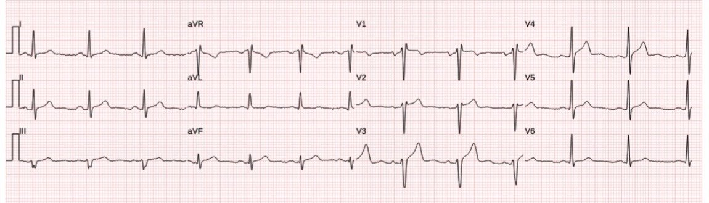
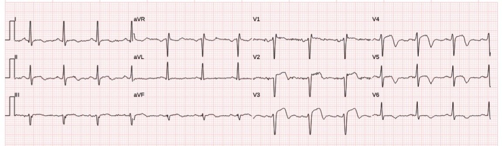
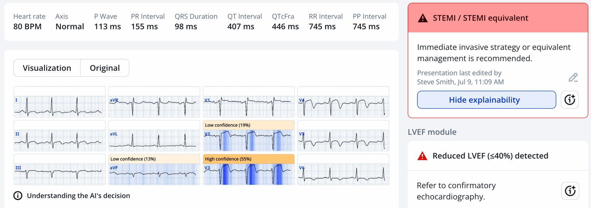
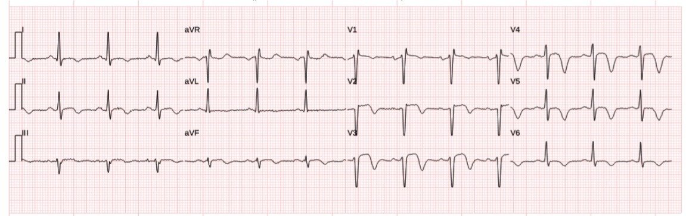
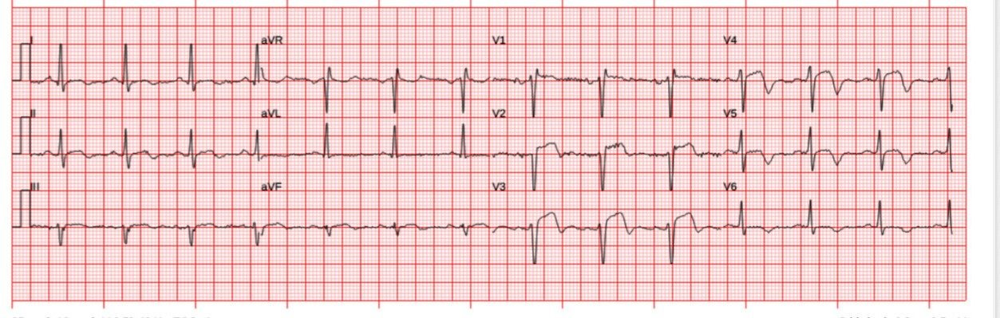
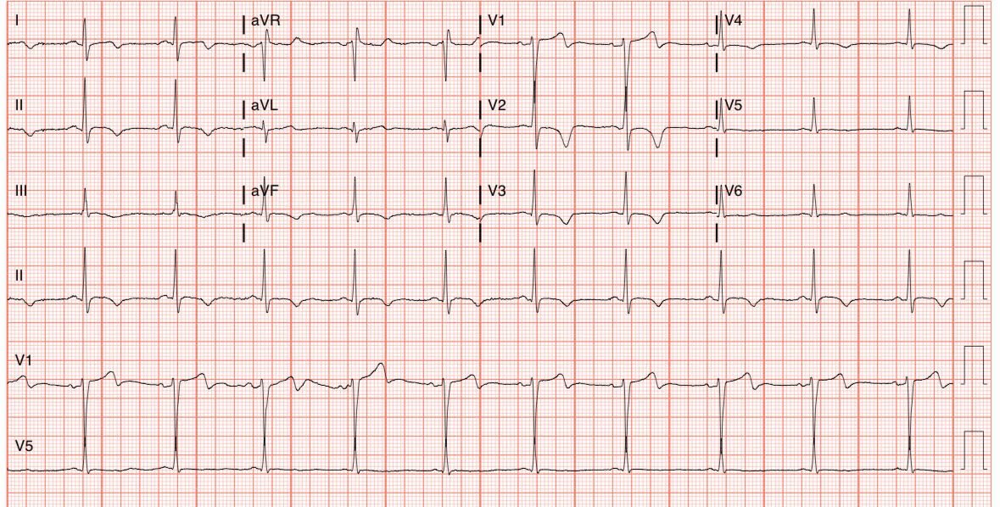
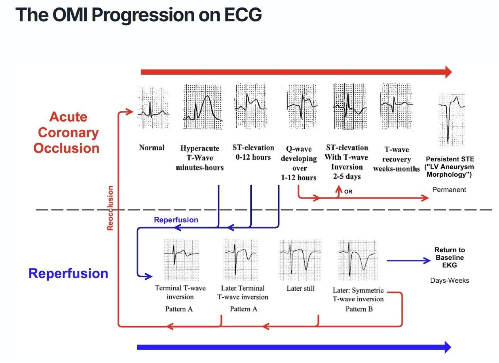
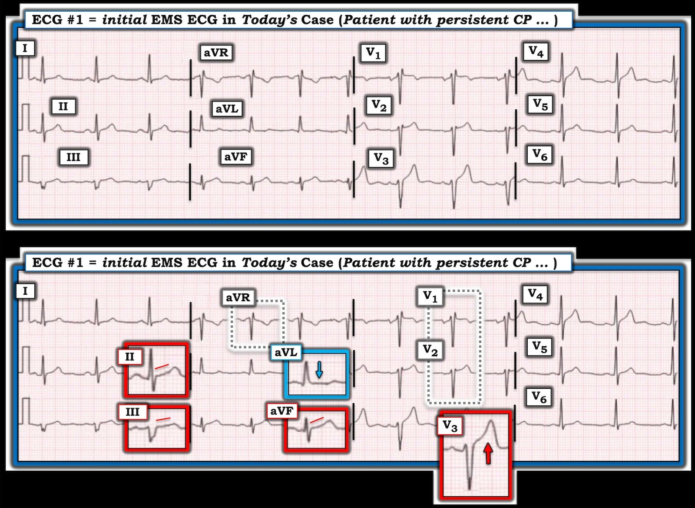

09/07/2025 — Trở lại điều cơ bản: điện tâm đồ thay đổi động — hãy ghi các điện tâm đồ liên tiếp và nắm vững diễn tiến của OMI
Bản dịch tiếng Việt của bài "Back to basics: ECGs are dynamic, get serial ECGs and learn the OMI progression" – Dr. Smith’s ECG Blog. Giữ nguyên toàn bộ 8 hình ảnh của bản gốc.


Tác giả: Pendell Meyers
Một bệnh nhân nam khoảng 40 tuổi bị đau ngực khi nghỉ, lúc có lúc không, nhiều lần trong 48 giờ qua. Cơn đau tái phát và kéo dài liên tục trong vài giờ thì đội cấp cứu ngoài viện (EMS) đến và ghi điện tâm đồ này:
Thời điểm 0 (trước viện):

Nhìn chung, tôi nghĩ bản thân điện tâm đồ này gợi ý nhồi máu cơ tim do tắc (OMI) ở các chuyển đạo V3-V4 và các chuyển đạo dưới, nhưng với tôi thì chưa đủ để chẩn đoán. Không có điện tâm đồ nền để so sánh, và còn băn khoăn liệu điện thế sóng S ở V3 có đang bị cắt cụt ở mức 10 mm hay không. Queen of Hearts cũng không thấy dấu hiệu OMI trên điện tâm đồ này. Sóng T ở V3 có phải là sóng T tối cấp không? Rất có thể, nhưng tôi cũng muốn chắc chắn rằng mình đang thấy toàn bộ sóng S để đánh giá đoạn ST và sóng T, vốn luôn tương xứng với QRS.
Thời điểm 16 phút (vẫn trước viện):


Và chỉ 16 phút sau, đây rõ ràng là OMI thành trước. Các dấu hiệu của OMI đang diễn ra và OMI đã tái tưới máu cùng hiện diện trên điện tâm đồ này vào lúc này, và chỉ có triệu chứng cùng diễn tiến điện tâm đồ mới cho biết động mạch đang trong quá trình mở ra hay đóng lại đôi chút vào thời điểm này, nhưng nhìn chung bệnh nhân rõ ràng bị OMI do LAD cần tái tưới máu cấp cứu. QOH rõ ràng dương tính với điện tâm đồ này và tất cả các điện tâm đồ bên dưới.


Hãy tải ứng dụng và tự mình thử! Xem chi tiết bên dưới.
Ứng dụng PMcardio for Individuals 3.0 mới nay đã có mô hình Queen of Hearts mới nhất và khả năng giải thích của AI (bản đồ nhiệt màu xanh)! Tải ngay cho iOS hoặc Android. https://www.powerfulmedical.com/pmcardio-individuals/ (BS. Smith và BS. Meyers đã huấn luyện mô hình AI và là cổ đông của Powerful Medical.)
Thời điểm 20 phút (lần cuối trước viện):


So với điện tâm đồ ở trên, có vẻ đã có tiến triển dọc theo trình tự tái tưới máu, với ST chênh lên (STE) thấp hơn và sóng T đảo ngược do tái tưới máu tiến triển thêm. Hy vọng triệu chứng của bệnh nhân đang thuyên giảm, nhưng dù thế nào thì tốt nhất vẫn nên tiến hành chụp mạch vành cấp cứu để kiểm soát tổn thương thủ phạm đã nứt vỡ cực kỳ bất ổn này, vì huyết khối có thể kết tập thêm 5 tiểu cầu nữa bất cứ lúc nào và lại gây tắc hoàn toàn!
Nói đến đó, đây là điện tâm đồ lúc đến khoa cấp cứu (ED) khi đang có triệu chứng:


So với điện tâm đồ gần nhất ở trên, điện tâm đồ này gợi ý có tắc lại tương đối, vì một phần sóng T đảo ngược đang đảo chiều trở lại.
Bệnh nhân được đưa vào phòng thông tim (cath lab) ngay sau khi đến, tại đây xác định được tổn thương thủ phạm ở LAD đoạn gần đến giữa, hẹp 99%, dòng chảy TIMI 3, có huyết khối. PCI được thực hiện không biến chứng.
Điện tâm đồ sáng hôm sau:


Mô hình tái tưới máu Queen of Hearts (QOH) của chúng tôi tất nhiên dương tính trên điện tâm đồ này.
Đây là hình minh họa đơn giản hóa về diễn tiến OMI mà tôi đã làm từ cuốn sách điện tâm đồ tuyệt vời của BS. Smith nhiều năm trước:


Nếu bạn hiểu OMI biểu hiện trên điện tâm đồ như thế nào, bạn có thể lần theo từng ca từ đầu đến cuối, trên con đường quanh co của nó qua sơ đồ.
======================================
BÌNH LUẬN CỦA TÔI, bởi KEN GRAUER, MD (9/7/2025):
“Tin tốt” ở ca hôm nay — là trong vòng 16 phút kể từ khi ghi điện tâm đồ EMS ban đầu — chẩn đoán điện tâm đồ OMI cấp đã được xác lập chắc chắn khi điện tâm đồ ghi lại cho thấy những thay đổi tái tưới máu rõ ràng.
- Tôi tập trung Bình luận của tôi vào câu hỏi: chẩn đoán OMI cấp này có khả năng đến mức nào khi chỉ dựa vào hình ảnh của điện tâm đồ EMS ban đầu này?
Để rõ ràng, trong Hình 1 — tôi đã trình bày lại điện tâm đồ ban đầu này. Theo ý kiến của tôi, “mục tiêu” của ca hôm nay — là nhận ra trong vòng vài giây rằng điện tâm đồ #1 rất đáng ngờ tắc cấp LAD đoạn gần, và cần được giả định như vậy cho đến khi chứng minh được điều ngược lại.
- Bệnh sử đáng lo ngại (tức là, một người đàn ông trung niên bị đau ngực trong 48 giờ qua, nay trở nên dữ dội và kéo dài liên tục). Bệnh sử này ngay lập tức xếp bệnh nhân vào nhóm nguy cơ cao hơn bị một biến cố tim cấp.
- “Mắt” tôi ngay lập tức bị thu hút vào phức bộ QRST ở chuyển đạo V3 — mà ở một bệnh nhân đau ngực mới xuất hiện, dữ dội, phải được giả định là biểu hiện một sóng T tối cấp (sóng ST-T này “đồ sộ” không tương xứng — xét đến độ sâu vừa phải của sóng S ở chuyển đạo V3 này).
- Điểm MẤU CHỐT: Vì chuyển đạo trước tim duy nhất trên điện tâm đồ #1 cho thấy rõ thay đổi tối cấp là chuyển đạo V3 — nên việc đánh giá đúng hình dạng sóng ST-T ở các chuyển đạo V1,V2 trở nên đặc biệt quan trọng. Tuy nhiên, gần như chắc chắn rằng các chuyển đạo V1,V2 đã bị đặt quá cao trên ngực — điều này về cơ bản vô hiệu hóa khả năng của chúng ta trong việc đánh giá hai chuyển đạo V1,V2 then chốt này đối với OMI do LAD (tức là, Cả hai chuyển đạo đều cho thấy phức bộ rSr’ — với chuyển đạo V1 biểu hiện thành phần âm khá sâu của sóng P, cùng hình thái QRST rất giống với hình thái thấy ở chuyển đạo aVR — Xem Bình luận của tôi trong bài ngày 4 tháng Mười Một năm 2018, cùng nhiều bài khác, về cách nhận ra nhanh tình trạng đặt sai vị trí điện cực V1,V2).
Dù đã nói như trên, mặc dù chuyển đạo V3 là chuyển đạo trước tim duy nhất cho thấy thay đổi tối cấp (Sóng T ở chuyển đạo V4 đáng ngờ — nhưng chưa đủ mất tương xứng để chẩn đoán) — các chuyển đạo chi trên điện tâm đồ #1 cho thấy những bất thường tinh tế-nhưng-có-thật thực sự củng cố mối lo ngại của chúng ta về thay đổi tối cấp ở chuyển đạo V3.
- Có hiện tượng thẳng đuỗn tinh tế ở đoạn khởi đầu ST trong mỗi chuyển đạo dưới. Việc đây nhiều khả năng là một thay đổi sóng ST-T “thật” — được củng cố bởi sóng T quá lớn với đáy rộng-hơn-mong-đợi ở chuyển đạo aVF, tăng không tương xứng khi xét đến biên độ rất nhỏ của sóng R ở chuyển đạo aVF này.
- Cũng tinh tế không kém, nhưng vẫn củng cố cho các dấu hiệu nêu trên — là hiện tượng đoạn ST thẳng đuỗn kèm ST chênh xuống nhẹ ở chuyển đạo aVL ( = một thay đổi soi gương).
ĐIỀU CỐT LÕI: Những thay đổi sóng ST-T nêu trên quả thực là tinh tế. Nhưng ở bệnh nhân này với đau ngực (CP) mới xuất hiện, kéo dài liên tục và dữ dội — việc thấy một sóng T tối cấp rõ ràng ở chuyển đạo V3 — đi kèm với những bất thường sóng ST-T tinh tế-nhưng-có-thật ở 4 chuyển đạo chi (và với việc hai chuyển đạo V1,V2 đặt sai vị trí nên không còn giá trị) — nhận định của tôi khi xem điện tâm đồ #1 là cần giả định OMI do LAD cấp cho đến khi chứng minh được điều ngược lại. Điện tâm đồ ghi lại 16 phút sau đó đã xác nhận nhận định này.


=================================
T.B. (P.S.): BS. Meyers nêu một điểm rất hay là các bản ghi của EMS (ít nhất là ở Mỹ) — thường bị cắt cụt, tức là các biên độ sóng R hoặc sóng S lớn hơn (thường là những biên độ vượt quá 10 mm) sẽ không được ghi lại khi sóng R hoặc sóng S chạm đến “ngưỡng cắt” 10 mm.
- Trong 3 phức bộ QRS mà chúng ta thấy ở chuyển đạo V3 của bản ghi EMS ban đầu — 2 phức bộ đầu trông như có thể đã bị “cắt cụt”. Tôi nghĩ phức bộ thứ 3 ở chuyển đạo này trông “đầy đủ” và thấp hơn ngưỡng cắt 10 mm. Nhưng rất dễ bị đánh lừa — vì vậy luôn nên (như BS. Meyers đã nhấn mạnh) kiểm tra lại bằng một điện tâm đồ khác hiển thị đầy đủ điện thế (Xem Bình luận của tôi trong bài ngày 6 tháng Hai năm 2020 — minh họa hiện tượng có thể gây nhầm lẫn này).
- Trong ca hôm nay — điện tâm đồ ghi lại lúc đến khoa cấp cứu đã xác nhận biên độ sóng S ở chuyển đạo V3 là vừa phải (không bị cắt trên các bản ghi EMS) — qua đó củng cố giả định của chúng ta về một sóng ST-T tối cấp “có tính chỉ điểm” (tell-tale) ở chuyển đạo V3 của các bản ghi trước viện.